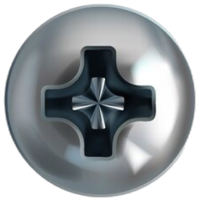

Signmaker
Sign
thin
ultra
small
large
tight
loose
tight
wide
A
B
C
Line
Core
Zone
text color
interior
outline
shadow color
shadow length
none
long
shadow angle
0°
360°
sign size
small
large
animation
spin
swing
⏸ pause
speed
slow
fast
tilt y
−180°
+180°
tilt x
level
steep
tilt z
left
right
SVG — vector ∞
PNG 1k — web
PNG 2k — small print
PNG 4k — 300 dpi / 13"
PNG 8k — 300 dpi / 27"
save image